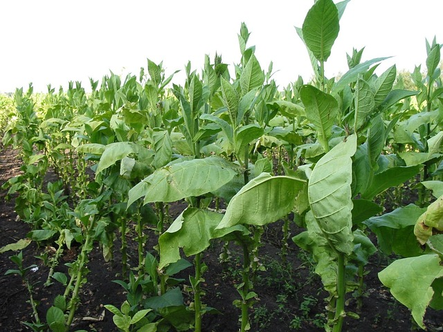
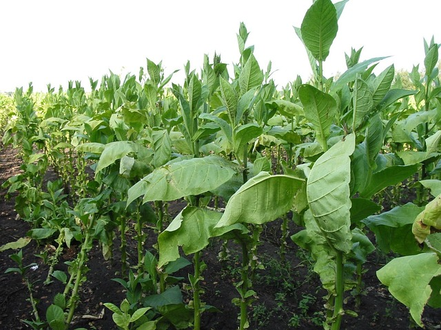

Farming Region Three - Transition Zone
Annual Rainfall: 650mm - 800mm
Region Three lies between the high rainfall areas and the drier zones, covering parts of Masvingo, Midlands, and southern Mashonaland. It has moderately reliable rainfall and is susceptible to periodic droughts, especially during mid-season dry spells.
This region is best suited for semi-intensive farming of drought-tolerant crops such as maize, sunflower, sorghum, and groundnuts. Livestock rearing, particularly cattle and goats, also plays a significant role in the farming systems of this zone.
Region 3 Crop Category Guide:
Support Services:
Extension services are available through ADSS AI ChatBot.